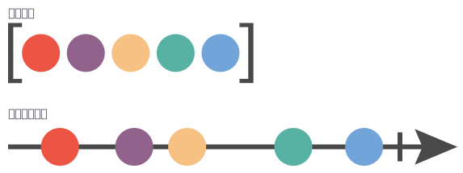
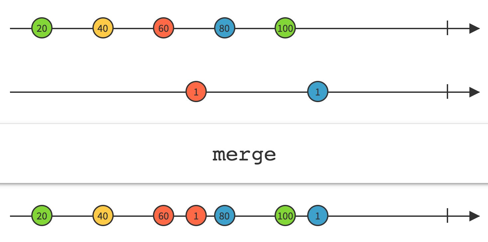
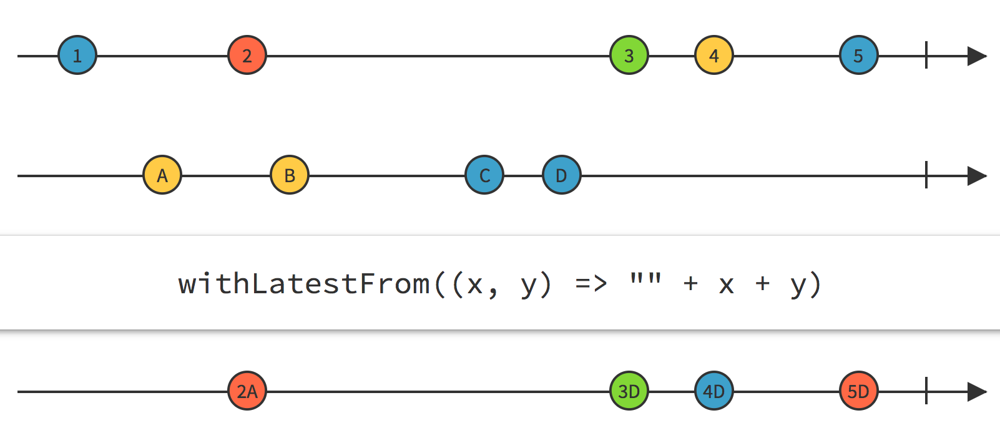
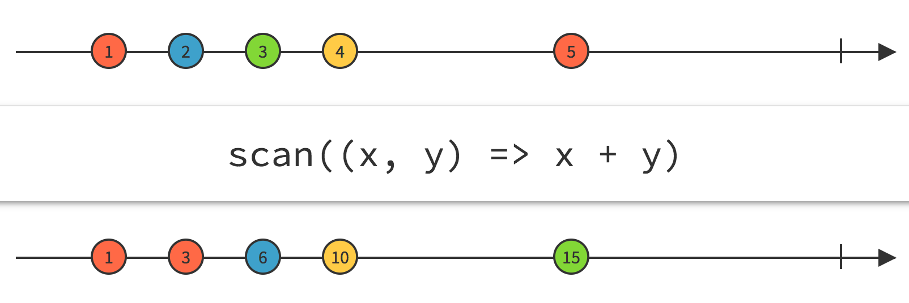

通过动画介绍RxJS
你或许曾经听过RxJS，或者ReactiveX，或者响应式编程，或者仅仅是函数式编程。当谈论到最新最棒的前端技术时，这些术语变得越来越突出。并且如果你与我类似，当你最初尝试去学习它的时候，你会感到十分困惑。
按ReactiveX.io的说法：
|
|
简短的一句话包含了很多需要理解的东西。在这篇文章，我们将通过创建响应的动画这种不同的手段来学习RxJS（ReactiveX的JavaScript实现）和Observable。
理解Observable
一个数组是一系列元素的集合，比如[1, 2, 3, 4, 5]。你可以立即取得所有元素，并且你可以对这些元素做诸如map和filter的操作。这允许你对这一系列元素做任何形式的变换。
现在假设数组的每个元素随时间的流逝出现，这就是说你不能立马取得所有元素，而是在一段时间后取得一个。你可能在第1秒的时候拿到第一个元素，然后第3秒的时候第二个，以此类推。用图来表示的话大概就是这样：

这可以描述为一系列数值的流、或者是一连串的事件、或者更贴切地：一个Observable。
|
|
正如数组一样，我们可以对这些数值做map、filter等等操作来新建或者组合出新的Observable。最终，你可以订阅这些Observable，并对最后的一串数值做任何你想要的操作。这就是RxJS。
开始使用RxJS
开始使用RxJS最简单的方法是通过CDN。不过，依据你的项目的需求，还有很多其它的方式可以用来安装它。
|
|
一旦在你的项目里引入RxJS，你可以从差不多任何东西创建一个Observable：
|
|
注意：通常约定在变量某尾加美元符号($)用于表示该变量是一个Observable。
Observable可以用于统一任何可以表示成一串随时间产生的数值的东西，比如事件、Promise、计时器、intervals以及动画。
但是，这些Observable做不了很多东西，除非你实际去监测（observe）它们。订阅就是用来做这个事，可以通过使用.subscribe()完成。
|
|
让我们实际看看：
|
|
从mouseMove$ Observable，每次触发mousemove事件时，订阅函数会用鼠标的位置更新titleElm的.innerHTML内容。.map Operator（机制和Array.prototype.map方法类似）有助于简化数据：
|
|
使用一点数学知识以及inline样式，你可以让卡片随鼠标旋转。pos.y / clientHeight和pos.x / clientWidth生成的值都介于0和1之间，因此将它乘以50再减去50的一半(25)会生成介于-25和25的值，而这就是我们需要的用于旋转的值。
|
|
使用.merge组合Observable
现在假设你想在触摸设备上响应鼠标移动或者touch移动事件。无需混乱的回调，使用RxJS你可以以多种方式组合Observable。在这个例子里，可以使用.merge Operator。正如多条车道合并成一条一样，这可以返回一个单独的包含了从多个Observable合并的全部数据的Observable。

|
|
去吧，试着在触摸设备上平移下看看：
还有其他有用的Operator可以用来组合Observable，比如.switch()、combineLatest()、和.withLatestFrom()。我们会在后续讨论它们。
添加平滑过渡
卡片旋转效果的确很棒，但是动作有点太僵硬了。无论鼠标（或者手指）在什么时候停止了，旋转也随之立即停止。我们可以用线性插值（LERP）来改进它。RachelSmith的这篇很赞的文章大体上描述了这一技巧。本质上，LEPR是在每个动画帧移动距离的一部分，而不是直接从A点调到B点。这可以带来平滑的过渡，即使鼠标/手指动作已经停止了。
让我们创建一个只做这样一个功能的函数：给定初始值和终止值，使用LERP计算出下一个值。
|
|
简短扼要。我们有了这样一个纯函数，它通过在每个动画帧时把当前（开始）位置向下一个（终止）位置移动10%，每次返回一个新的插值计算后的位置值。
Schedulers and .interval
现在的问题是我们如何在RxJS里表示动画帧？事实上，RxJS有个东西叫Schedulers用于控制一个Observable何时应该emit数据，以及其他的一些东西比如订阅器何时应开始接收数值。
使用Rx.Observable.interval()，你可以创建一个按规定时间间隔emit数值的Observable，例如每隔一秒（Rx.Observable.interval(1000)）。如果你使用一个极小的间隔，比如Rx.Observable.interval(0)，并且使用Rx.Scheduler.animationFrame安排它只在每个动画帧emit数值，大约每16到17ms，在每个动画帧里将会有一个数值被emit出来，这正是我们所预期的：
|
|
用.withLatestFrom来组合
为了创建平滑的线性插值，你只需关注每个动画节点鼠标/触摸的最新位置。为此，可以使用.withLatestFrom() Operator：
|
|
现在我们有了一个新的Observable smoothMove$，它只在animationFrame$ emit一个数值的时候emit move$的最新数值。这是我们所预期的——你不会希望数值在动画帧外被emit出来（除非你喜欢卡顿）。第二参数是一个函数，用于描述如何组合来自每个Observable的最新数值。针对这种情形，真正重要的值只有move的数值，因此只有它被返回了。

使用.scan来过渡
既然你已经有了一个Observable用于在每个动画帧emit来自move$的最新数值，是时候加上线性插值了。.scan() Operator用于“累加”一个Observable的当前值和下一个值，通过给定一个接受上述值为参数的函数。

这是使用我们的线性插值用例的完美场景。还记得我们的lerp(start, end)接收两个参数：start（当前值）和end（终止值）。
|
|
现在你可订阅smoothMove$而不是move$来实际体验下线性插值过渡。
总结
当然，RxJS并不是一个动画库，但是用一种组合式的、声明式的方式来处理随时间产生的值是ReactiveX的核心理念，因此动画可以作为一种很棒的方式来演示这一技术。响应式编程是一种不同的思考编程的方式，并带有许多好处：
它是声明式的、可组合的以及不可变的，这能避免回调地狱，并且使你的代码更加紧凑、可重用以及模块化。
它在处理各种类型的异步数据时非常有用，无论是获取数据，WebSocket通信，监听不同源的事件，或者甚至是动画。
“关注点分离”——你使用Observable以及Operator声明式地表示你想要的数据，然后单独使用
.subscribe()处理副作用（side effects），而不是将它们分散到代码库的各个地方。有非常多不同语言的实现——Java，PHP，Python，Ruby，C#，Swift，以及其他一些你可能甚至都没听过的语言。
它不是一个框架，并且很多流行的框架（比如React，Angular以及Vue）可以很好地配合RxJS使用。
如果你希望你可以找到很多时髦点，但是ReactiveX的最初实现几乎是在10年前（2009），源于ConalElliott和PaulHudak20年前（1997）提出的关于描述响应函数式动画（吃惊吧）的想法。不用说，它是经过实战检验的。
本文探讨了RxJS的一系列有用的部分及概念——使用.fromEvent()和.interval()创建Observable，使用.map()和.scan()操作Observable，使用.merge()和.withLatestFrom()组合Observable，并且通过Rx.Scheduler.animationFrame介绍了Schedulers。当然还有很多有用的资源可以用于学习RxJS：
ReactiveX: RxJS-官方文档
RxMarbles-可视化Observable
AndreStaltz
的The introduction to Reactive Programming you’ve been missing
如果你希望更进一步学习使用RxJS来做动画（或者使用CSS变量编写更加声明式的代码），可以查看我在CSS DevConf 2016上的幻灯片以及我在JSConf Iceland 2016上的演讲。如果是寻找灵感，下面是一些使用RxJS做动画的Pens：